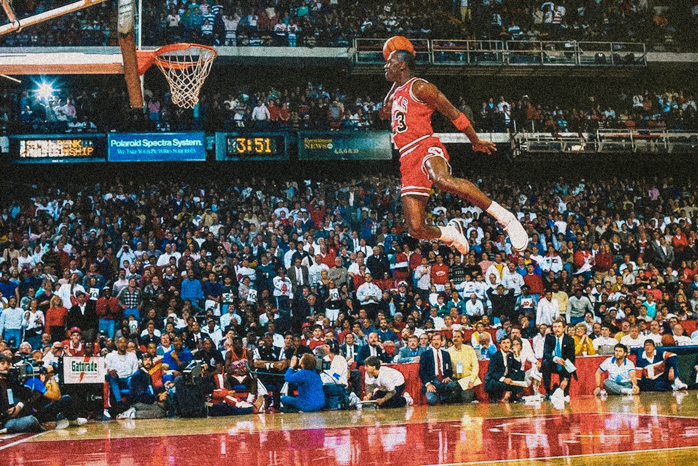
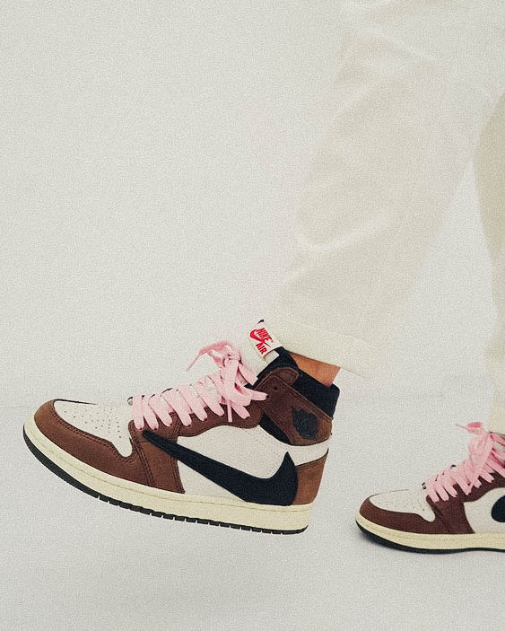

After being selected third overall pick by the Chicago Bulls in 1984, Michael Jordan was signed to a five-year deal with Nike that was worth a reported $2.5 million, a hefty price tag at the time. A year later, Nike gave Jordan his own signature and the Nike Air Jordan was born. This sneaker was so different from everything else on the market at the time that NBA commissioner David Stern fined Jordan $5,000 every time he wore them in a game. Nike gladly paid the fine on Jordan’s behalf because it was great marketing for the shoe. Jordan wore the red and black Air Jordan’s when he scored 63 points against Larry Bird’s Boston Celtics in the 1986 playoffs.
 adjective
/ˈdʒeɪdɪd/
buying jordans are exciting the first time you do it, but you soon become jaded.